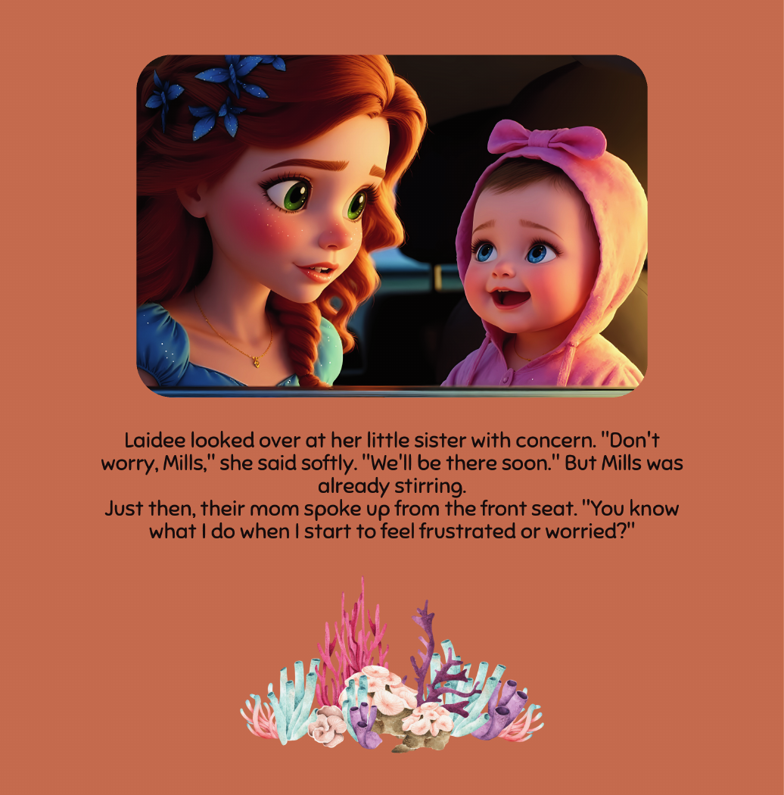
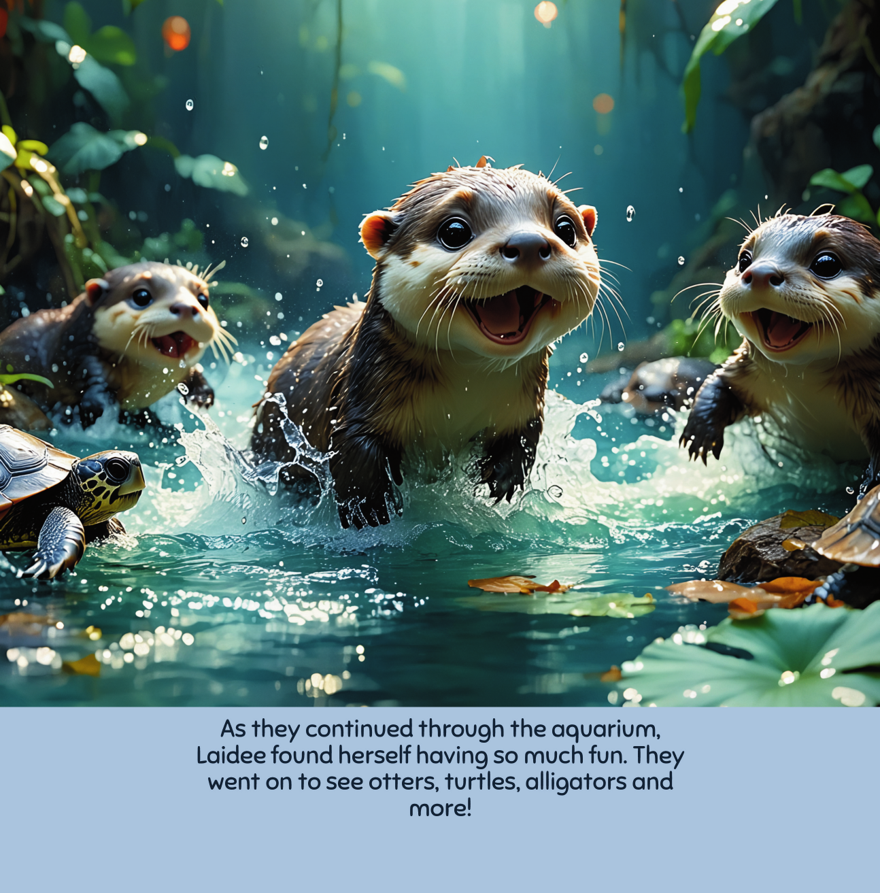
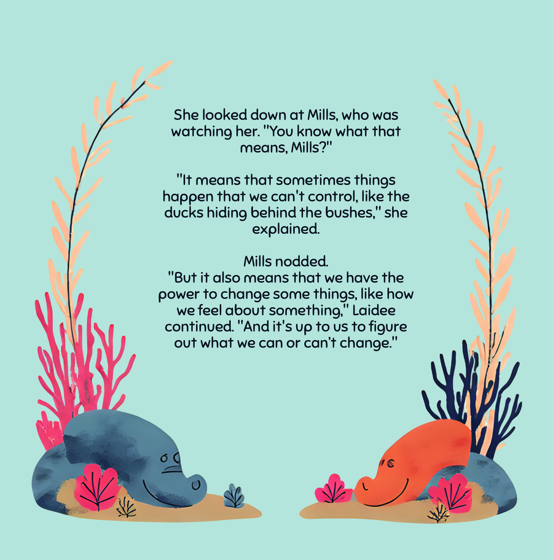

🌰 The Foundation
Why the Ocean Loves Children Back
The ocean is the planet’s greatest wonder machine. Vast, mysterious, beautiful, and filled with creatures that seem almost impossibly magical. For children, it offers something no other subject can: an infinite frontier of discovery that grows with them.
Children who develop a relationship with the natural world — especially the ocean — show measurable benefits throughout their lives. Studies from the Children & Nature Network show that nature-connected children demonstrate stronger problem-solving skills, greater empathy, better emotional regulation, and higher academic performance across STEM subjects.
The ocean is uniquely powerful for this because it combines so many elements that captivate young minds: vivid colors, mysterious creatures, a sense of hidden worlds, the rhythm of waves, and an endless supply of “did you know?” facts that children love to share. A child who loves the ocean never runs out of things to be curious about.
And the best part? You don’t need to live near a beach. Books, aquarium visits, documentaries, and simple home activities can build a deep and lasting ocean connection from anywhere in the world. The journey starts with a single picture book.

Start With a Great Book

Build the Wonder

A Lifelong Ocean Lover